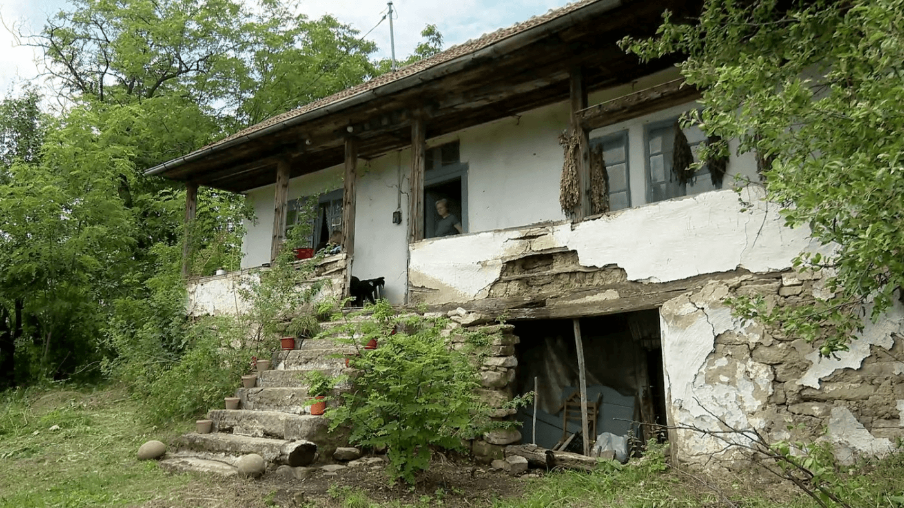
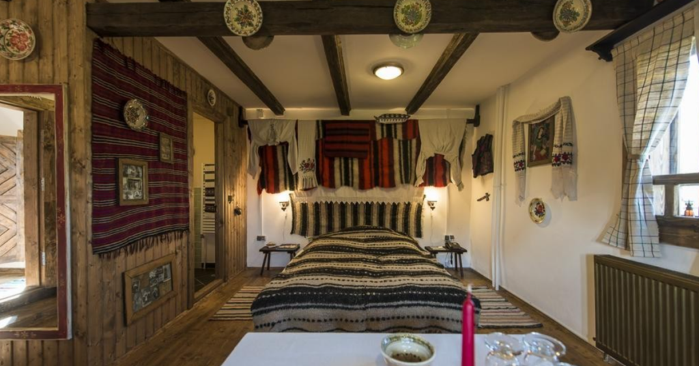
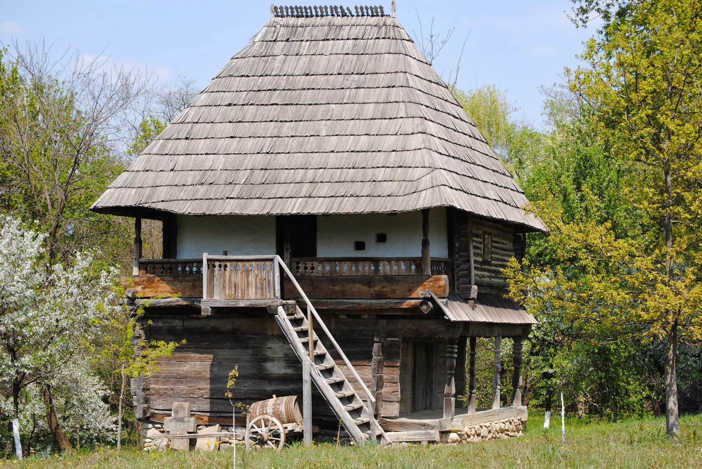
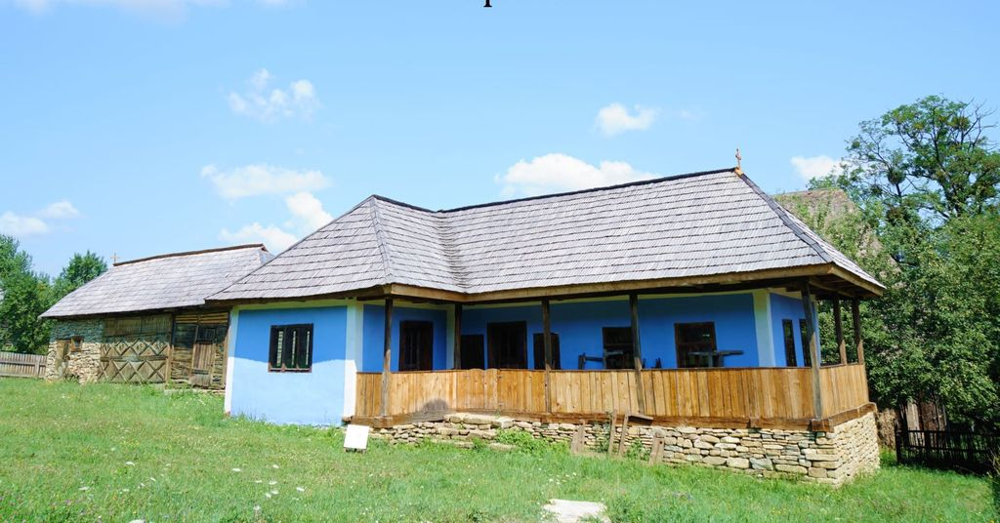
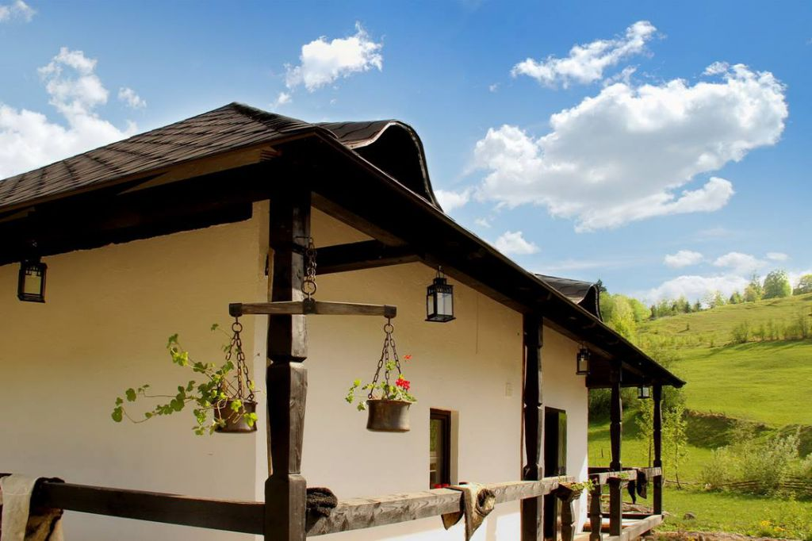

„Tot mai mulți români aleg să dea traiul la oraș pe viața la sat. E un trend în continuă creștere care arată dorința oamenilor de a trăi altfel. Ți-am pregătit șapte astfel de povești ca să știi la ce să te aștepți dacă te muți de la oraș la sat. Cu bune, cu rele, cu provocări și cu satisfacții.Mai jos o să găsești câteva dintre poveștilor celor care au ales să se mute de la oraș la sat. Fiecare într-un alt colț de țară, fiecare cu dorințe și aspirații diferite. Din poveștile lor poți să înțelegi mai bine de ce au ales să lase orașul pentru sat, ce provocări au întâmpinat și ce presupune, mai exact, să stai la țară.
1.Sanda a simțit chemarea satului românesc din Delta Dunării
Antreprenoarea spune că a ales să trăiască la sat pentru că asta o împlinește. „Nu aș putea să trăiesc în oraș, deoarece am nevoie de liniște, peisaj, spațiu. Îmi place să am grădină să mă plimb, să pun un șevalet în fața casei”, spune ea.
Totodată, ea spune că iubește satul românesc și nu s-ar mai putea despărți de acest stil de viață. „În Italia stăteam tot la sat, dar era civilizația unui oraș. Trebuie să accepți satul, trebuie să te implici unde poți face o schimbare. Cred că se merită, pentru că viața la sat este una bogată, sănătoasă și întregește sufletul unui om căutător de esențialitate”, mai zice Sanda. Din 2018, Sanda alături de familia ei s-au mutat în casa din satul Somova. Au avut și susținerea familiei, mai ales după ce casa s-a transformat într-un business productiv.

2. Alexia s-a mutat de la oraș la sat să nu mai audă vuietul
Traiul la oraș nu mai era pentru ea, mai ales din cauza zgomotului și a aglomerației din apartamentul din Berceni. „Vuietul din ultimii ani începuse să-mi provoace migrene.
Locuiam la etajul zece, într-o intersecție, iar ideea de a lucra cu geamul deschis îmi provoca nervi. Nu era un loc bun. Iar odată cu venirea fiicei noastre ne-am dat seama că avem nevoie de ceva în plus”, a explicat ea. Așa au ajuns la 20 de kilometri distanță de București, într-un sat micuț din Giurgiu, unde și-au construit casa lor departe de agitație. Casa a costat inițial 52.000 de euro, fiind o locuință cu o arhitectură simplă, dar care e foarte bine izolată, care are o fereastră imensă în living e și o terasă simpatică. Însă, după ce s-am mutat și costurile s-au ridicat din cauza estimărilor greșite, casa a ajuns la un total de 100.000 de euro.
Cea mai mare provocare a fost estimarea de cost pentru podelele care acopereau scările de beton. Inițial, cei doi estimau că vor costa aproximativ 2000 de euro. Însă au ajuns să dea 4500 de euro.
Pe lângă asta, le-a fost greu să găsească meșteri sau muncitori pricepuți. Iar creșterea fiicei pe șantier a fost o provocare la fel de mare, dar au reușit să o scoată la capăt. Cu toate acestea, au o casă funcțională, pe o suprafață utilă de 110 metri pătrați, iar tot terenul are 820 metri pătrați.
„Nu aș încuraja pe nimeni să facă asta, pentru că e o alegere foarte personală și există multe beneficii, dar și dificultăți. Pentru noi, când tragem linie la final de zi ele se egalează. La țară trebuie să ai mintea, inima și ochii deschiși, fiindcă altfel e riscul să intri cu bocancii în ceva ce nu înțelegi. Sfatul meu este să-și urmeze inima, fiindcă viața prea scurtă pentru a urma fiecare normă socială care ne-a fost pusă pe tavă”, explică Alexia.

3. Mădălina și Lucian, suport din partea comunității locale când s-au mutat de la oraș la sat
Povestea mutării de la oraș la sat a celor doi a pornit după o vizită în satul Hărțăgani din Hunedoara, unde locuia fratele geamăn al lui Lucian. Cei doi au simțit că locul lor trebuie să fie într-o casă pe pământ. După mult research și după multe vizionări, au reușit să găsească o casă în același sat. Casa a costat 27.000 de euro, fiind o casă veche, din 1966. Dar cu o organizare bună: un living generos care dă, prin intermediul unor uși duble, în dormitorul casei, și încă un dormitor pe care-l numesc „camera oaspeților” sau biroul lui Lucian. Casa are 110 metri pătrați, iar tot terenul cumpărat de cuplu, cu pomi fructiferi și viță de vie, are 4000 metri pătrați.
Singura problemă de care cei doi s-au lovit a fost faptul că nu mai fusese locuită de 13 ani. Însă, Mădălina și Lucian s-au ocupat imediat de renovare, cu ajutorul unei echipe de meșteri din sat. Locuința inițială nu avea nici baie, nici bucătărie, așa că le-au construit de la zero pe ambele. De asemenea, în sat nu există rețea de apă, canalizare sau gaze naturale. Sursa lor de apă este fântâna din curte, încălzirea se face cu ajutorul unei centrale pe peleți, iar pentru canalizarea au instalat o fosă septică ecologică. Toate aceste schimbări, plus mobila nouă i-au mai costat aproximativ 12.000 de euro. Și ei, la rândul lor, au păstrat farmecul locului și au recondiționat mobila veche. Și au în plan să transforme fosta casă a bătrânilor de pe același teren în casă de oaspeți.
Mădălina și Lucian se bucură de un mediu relaxat și de aer curat, nu mai au probleme cu somnul și au parte de câte un apus de poveste în fiecare seară. Au alături, pentru că muncesc de acasă, trei pisici și un câine, iar rudele vin în vizită mai des pentru a se bucura de timp împreună. Mai mult, comunitatea locală îi sprijină, iar tinerii din sat îi invită la drumeții pe poteci numai de ei știute.

4. O casă veche de 80 de ani, recondiționată pentru a deveni acasă
 Au ales viața la țară pentru că nu mai suportau praful, gălăgia și noxele din București. Dar și pentru că se simt acasă în natură. „Dar nu în parc sau la picnic, ci in the middle of the wilderness.
Deși funcționăm optim și în oraș, am știut amândoi că nu în citadelă ne este locul, așa că am decis să ne mutăm în mijlocul naturii”, spune Dona.
Casa cu totul a reprezentat cea mai mare provocare în sine din cauza vechimii și faptului că nu a fost îngrijită. De exemplu, acoperișul avea o gaură imensă și a trebuit refăcut.
La fel și soclul casei sau polata. Timp de doi ani, Dona și Vali au muncit patru zile din șapte la construcție și la grădina de 2500 metri pătrați pe care o au. De altfel, cu economiile aferente și cu banii din credit și-au stabilit un plan în avans: două lucrări majore în fiecare an și alte câteva mai mici, astfel încât, atunci când se vor muta definitiv, casa să fie gata să-i primească. Așa au reușit să-și facă o baie și să aibă bucătăria la gri.
5. Marin a vrut să stea într-un tiny house între dealuri
Tiny house-ul lui Marin are opt metri lungime și 3,5 metri înălțime. Are un open space, baia este departajată, iar dormitorul este la mansardă.
„Doar că acolo nu stai în picioare drept, dar e destul de relaxant și doar pentru somn”, zice el. Casa a însemnat o investiție de 26.000 de euro. La care s-au adăugat alți 30.000 de lei pentru panouri fotovoltaice care îi asigură autonomie. Are apă de la rețea, iar încălzirea o face cu un șemineu pe lemne.
 „Mă simt foarte bine în locuința mea. Iarna este liniște deplină, dar primăvara, când vin păsările, la cinci dimineața e ceva de vis.
Uneori deschid geamul de la dormitor și mă las să adorm cu gălăgia din pădure”, povestește Marin. Recomandă tuturor celor care sunt dornici de o astfel de mișcare, chiar dacă au o îndoială, să „treacă peste, pentru că nu o să regrete nimic.
Nici nu-ți trebuie o casă foarte mare să fii fericit, important e să te simți bine, să fii cu persoana dragă și să locuiești unde vrei”.
6. Cristina a renovat casa copilăriei de la poalele Munților Făgăraș!
A avut și ajutorul mamei ei, care este de profesie inginer constructor. Lucrările au presupus refacerea tencuielii interioare, parțial sau total, înlocuirea podelelor vechi, inclusiv strat suport de beton cu izolație, schimbarea instalațiilor de apă, gaz, electricitate și canalizare. Totodată, dorința Cristinei a fost să să descopere grinzile vechi de lemn din living și să le recondiționeze. Recondiționarea ferestrelor și a ușilor vechi din lemn, dar și montarea unei centrale termice pe gaz și a caloriferelor, cât și a unui șemineu au fost, de asemenea, parte din recondiționare.
7. Iuliana și Dan trăiesc într-un tiny house tradițional
Pasiunea lui Dan pentru casele din lemn a pornit după o drumeție de-alea sale cu bicicleta. A văzut cum oamenii nevoiași din Sighet trăiesc fericiți în astfel de case și a simțit că trebuie să salveze genul ăsta de locuințe.
În 2006 a plecat în afara țării, acolo unde a construit astfel de case pentru oameni importanți. După care a construit prima lui căsuță din lemn vechi recuperat de la o casă care a ars. Aici fiind și casa lor permanentă din prezent.
A avut și ajutorul mamei ei, care este de profesie inginer constructor. Lucrările au presupus refacerea tencuielii interioare, parțial sau total, înlocuirea podelelor vechi, inclusiv strat suport de beton cu izolație, schimbarea instalațiilor de apă, gaz, electricitate și canalizare.
Totodată, dorința Cristinei a fost să să descopere grinzile vechi de lemn din living și să le recondiționeze. Recondiționarea ferestrelor și a ușilor vechi din lemn, dar și montarea unei centrale termice pe gaz și a caloriferelor, cât și a unui șemineu au fost, de asemenea, parte din recondiționare.
Reguli de baza in viata:
- Mananca sanatos!
- Munceste cu drag!
- Nu uita de Dumnezeu!